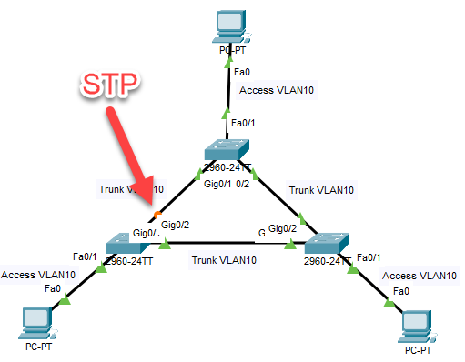

Redundantie betekent dat er meerdere paden tussen switches liggen. Dat is handig als reserve wanneer een verbinding wegvalt, maar zonder Spanning Tree Protocol levert het een broadcast storm op: berichten blijven eindeloos in een cirkel rondgaan tussen de switches, het netwerk raakt overbelast en valt uit. STP detecteert die redundante verbindingen en blokkeert automatisch bepaalde poorten, zodat er één actief pad overblijft. Meer daarover staat bij Spanning Tree Protocol.
Download het startbestand en open het in Cisco Packet Tracer.

Op VLAN 10, dat van de clients, is Spanning Tree uitgeschakeld. Daardoor ontstaat er een broadcast storm.
Zet STP opnieuw aan op VLAN 10, zodat het netwerk weer werkt.